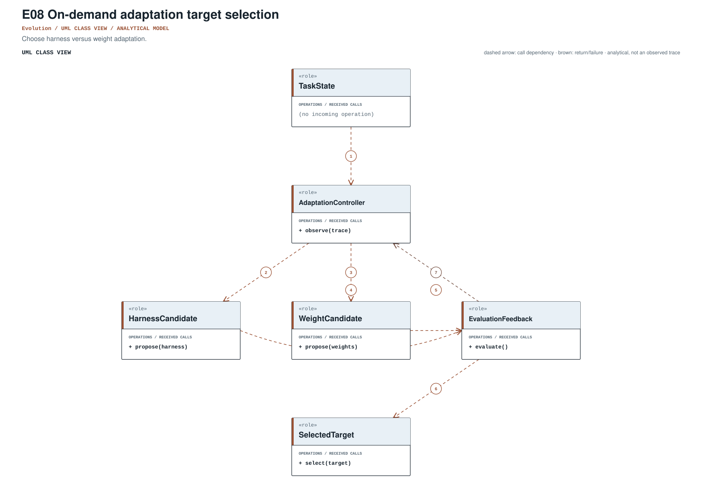
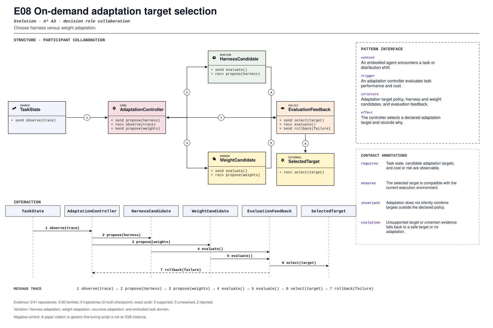

PROMPT SKETCH
Observe the task state and the candidate adaptation targets. Choose a target that is compatible with the current environment, and record why that target was selected.Choose harness versus weight adaptation.
embodied_adaptation_decisionRECORD STATUSCandidate · v0.1.0The proposed contract drawn as participant roles, received calls, and numbered dependencies.

The same roles and calls as a class collaboration and a numbered message sequence.

Where the mechanism applies. All four dimensions belong to the proposed match, not just its vocabulary.
The obligation that clients, operators, and auditors should be able to rely on.
A paper citation or generic fine-tuning script is not an E08 instance.
The hot spot is admitted only where the protected semantics survive.
Harness adaptation, weight adaptation, recursive adaptation, and embodied task domain.
Test target choice, unsupported change, reversibility, and transfer.
Is there an official implementation with target-selection provenance?
An illustrative prompt and a small design sketch for the proposed contract. Names and APIs are invented; this is not a repository excerpt.
Observe the task state and the candidate adaptation targets. Choose a target that is compatible with the current environment, and record why that target was selected.def adapt(state, candidates, policy):
viable = [
candidate for candidate in candidates
if candidate.compatible(state.environment)
]
if not viable:
return NoAdaptation("no compatible target")
chosen = policy.choose(viable, state)
return Adaptation(
target=chosen.id,
kind=chosen.kind,
evidence=chosen.compatibility_record,
)Illustrative design sketch. Harness and weight adaptation are different targets with different evidence. This example is a teaching aid, not implementation evidence or a conformance claim.
The frozen rule that retrieves this record, the canonical source exemplar, and the control that should stay unmatched.
embodied_adaptation_decision(?i)\b(?:adaptation[_-]?target|weight[_-]?adaptation|on[_-]?demand[_-]?adaptation)\bFrozen expression, v0.1.0. A match is a retrieval cue, not a confirmed implementation.Scope-anchored review. pohe-agent analyze <repo> --pattern E08 anchors the cue to its enclosing declaration and checks a separate operational signature for all four pointcut dimensions. Missing roles and negative-control risks remain visible; a structural match is not E2/E3. Calibration report ↗
Up to five public files retrieved by the frozen cue and pinned to the examined commit. A match is a place to inspect, not a confirmed implementation.
The frozen panel returned no cue realization, so the record remains specification-only. No repository link is invented to fill the gap.
Each layer answers a different question. Do not substitute retrieval for review.
No official executable implementation was located in the supplied study. The paper anchor motivates the record; it is not an implementation claim.
Review boundary: this candidate and its specification come from an AI-assisted study. Independent human validation remains open.
0.0% of repository families in the frozen panel have at least one current cue, historical cue, or canonical source layer. This is not confirmed prevalence.
Current lexical-cue repositories: 0 / 41AdaRSI paper describes choosing harness adaptation versus policy training.
(?i)\b(?:adaptation[_-]?target|weight[_-]?adaptation|on[_-]?demand[_-]?adaptation)\bThis expression is a discovery instrument only. A match is a retrieval cue—not a confirmed implementation, pointcut match, or contract proof.